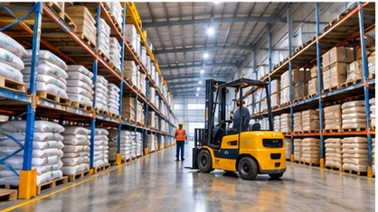
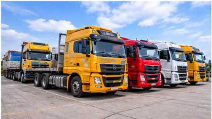

বাণিজ্য ও সরবরাহ
মেসার্স নবী এন্টারপ্রাইজ
বিভিন্ন বাণিজ্যিক ও শিল্প পণ্য ক্রয়-বিক্রয় ও সরবরাহে নিয়োজিত প্রতিষ্ঠান।
বিস্তারিত দেখুনমেসার্স নবী এন্টারপ্রাইজ সার, সিমেন্ট, কয়লা, চাল, গম, পাথর ও খৈল বিক্রয় ও সরবরাহ করে। মেসার্স ঝিমীক ট্রান্সপোর্ট এজেন্সি সড়ক ও নৌপথে মালামাল পরিবহন সেবা দেয়। উভয় প্রতিষ্ঠান মোঃ মিলন মোল্লার মালিকানাধীন।


বিভিন্ন বাণিজ্যিক ও শিল্প পণ্য ক্রয়-বিক্রয় ও সরবরাহে নিয়োজিত প্রতিষ্ঠান।
বিস্তারিত দেখুন
সড়ক ও নৌপথে বাণিজ্যিক মালামাল পরিবহন সেবা।
বিস্তারিত দেখুনমেসার্স নবী এন্টারপ্রাইজ ও মেসার্স ঝিমীক ট্রান্সপোর্ট এজেন্সির প্রোপ্রাইটর। হাইস্পীড ঘাট, নওয়াপাড়া, যশোর থেকে উভয় প্রতিষ্ঠান পরিচালিত।
ব্যবসায়িক ও পরিবহন বিষয়ক জিজ্ঞাসার জন্য যোগাযোগ করুন।
আজই যোগাযোগ করুন